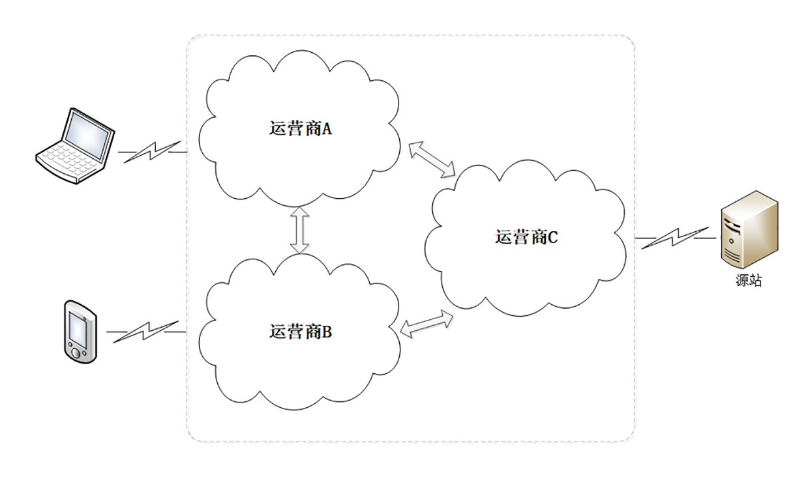
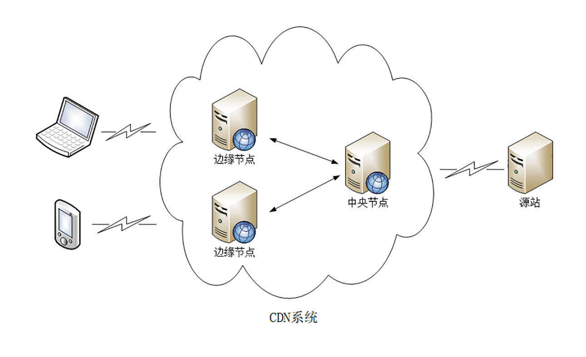
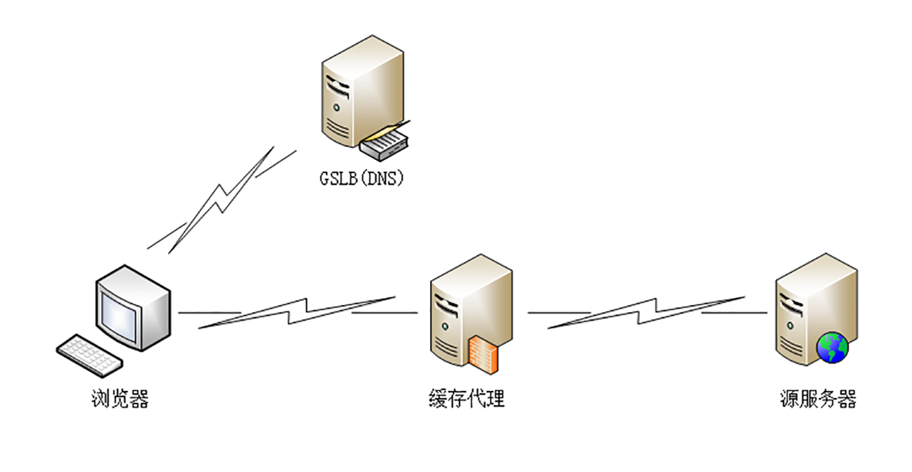
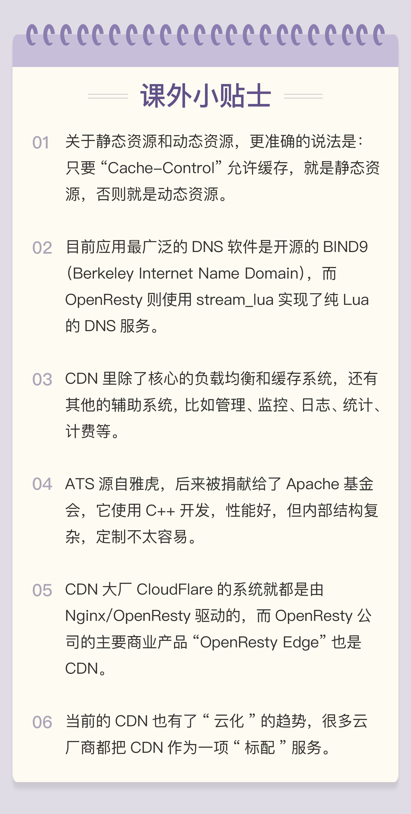

- 00 开篇词｜To Be a HTTP Hero.md.html
- 01 时势与英雄：HTTP的前世今生.md.html
- 02 HTTP是什么？HTTP又不是什么？.md.html
- 03 HTTP世界全览（上）：与HTTP相关的各种概念.md.html
- 04 HTTP世界全览（下）：与HTTP相关的各种协议.md.html
- 05 常说的“四层”和“七层”到底是什么？“五层”“六层”哪去了？.md.html
- 06 域名里有哪些门道？.md.html
- 07 自己动手，搭建HTTP实验环境.md.html
- 08 键入网址再按下回车，后面究竟发生了什么？.md.html
- 09 HTTP报文是什么样子的？.md.html
- 10 应该如何理解请求方法？.md.html
- 11 你能写出正确的网址吗？.md.html
- 12 响应状态码该怎么用？.md.html
- 13 HTTP有哪些特点？.md.html
- 14 HTTP有哪些优点？又有哪些缺点？.md.html
- 15 海纳百川：HTTP的实体数据.md.html
- 16 把大象装进冰箱：HTTP传输大文件的方法.md.html
- 17 排队也要讲效率：HTTP的连接管理.md.html
- 18 四通八达：HTTP的重定向和跳转.md.html
- 19 让我知道你是谁：HTTP的Cookie机制.md.html
- 20 生鲜速递：HTTP的缓存控制.md.html
- 21 良心中间商：HTTP的代理服务.md.html
- 22 冷链周转：HTTP的缓存代理.md.html
- 23 HTTPS是什么？SSLTLS又是什么？.md.html
- 24 固若金汤的根本（上）：对称加密与非对称加密.md.html
- 25 固若金汤的根本（下）：数字签名与证书.md.html
- 26 信任始于握手：TLS1.2连接过程解析.md.html
- 27 更好更快的握手：TLS1.3特性解析.md.html
- 28 连接太慢该怎么办：HTTPS的优化.md.html
- 29 我应该迁移到HTTPS吗？.md.html
- 30 时代之风（上）：HTTP2特性概览.md.html
- 31 时代之风（下）：HTTP2内核剖析.md.html
- 32 未来之路：HTTP3展望.md.html
- 33 我应该迁移到HTTP2吗？.md.html
- 34 Nginx：高性能的Web服务器.md.html
- 35 OpenResty：更灵活的Web服务器.md.html
- 36 WAF：保护我们的网络服务.md.html
- 37 CDN：加速我们的网络服务.md.html
- 38 WebSocket：沙盒里的TCP.md.html
- 39 HTTP性能优化面面观（上）.md.html
- 40 HTTP性能优化面面观（下）.md.html
- 结束语 做兴趣使然的Hero.md.html
37 CDN：加速我们的网络服务
在正式开讲前，我们先来看看到现在为止 HTTP 手头都有了哪些“武器”。
协议方面，HTTPS 强化通信链路安全、HTTP/2 优化传输效率；应用方面，Nginx/OpenResty 提升网站服务能力，WAF 抵御网站入侵攻击，讲到这里，你是不是感觉还少了点什么？
没错，在应用领域，还缺一个在外部加速 HTTP 协议的服务，这个就是我们今天要说的 CDN（Content Delivery Network 或 Content Distribution Network），中文名叫“内容分发网络”。
为什么要有网络加速？
你可能要问了，HTTP 的传输速度也不算差啊，而且还有更好的 HTTP/2，为什么还要再有一个额外的 CDN 来加速呢？是不是有点“多此一举”呢？
这里我们就必须要考虑现实中会遇到的问题了。你一定知道，光速是有限的，虽然每秒 30 万公里，但这只是真空中的上限，在实际的电缆、光缆中的速度会下降到原本的三分之二左右，也就是 20 万公里 / 秒，这样一来，地理位置的距离导致的传输延迟就会变得比较明显了。
比如，北京到广州直线距离大约是 2000 公里，按照刚才的 20 万公里 / 秒来算的话，发送一个请求单程就要 10 毫秒，往返要 20 毫秒，即使什么都不干，这个“硬性”的时延也是躲不过的。
另外不要忘了， 互联网从逻辑上看是一张大网，但实际上是由许多小网络组成的，这其中就有小网络“互连互通”的问题，典型的就是各个电信运营商的网络，比如国内的电信、联通、移动三大家。

这些小网络内部的沟通很顺畅，但网络之间却只有很少的联通点。如果你在 A 网络，而网站在 C 网络，那么就必须“跨网”传输，和成千上万的其他用户一起去“挤”连接点的“独木桥”。而带宽终究是有限的，能抢到多少只能看你的运气。
还有，网络中还存在许多的路由器、网关，数据每经过一个节点，都要停顿一下，在二层、三层解析转发，这也会消耗一定的时间，带来延迟。
把这些因素再放到全球来看，地理距离、运营商网络、路由转发的影响就会成倍增加。想象一下，你在北京，访问旧金山的网站，要跨越半个地球，中间会有多少环节，会增加多少时延？
最终结果就是，如果仅用现有的 HTTP 传输方式，大多数网站都会访问速度缓慢、用户体验糟糕。
什么是 CDN？
这个时候 CDN 就出现了，它就是专门为解决“长距离”上网络访问速度慢而诞生的一种网络应用服务。
从名字上看，CDN 有三个关键词：“内容”“分发”和“网络”。
先看一下“网络”的含义。CDN 的最核心原则是“就近访问”，如果用户能够在本地几十公里的距离之内获取到数据，那么时延就基本上变成 0 了。
所以 CDN 投入了大笔资金，在全国、乃至全球的各个大枢纽城市都建立了机房，部署了大量拥有高存储高带宽的节点，构建了一个专用网络。这个网络是跨运营商、跨地域的，虽然内部也划分成多个小网络，但它们之间用高速专有线路连接，是真正的“信息高速公路”，基本上可以认为不存在网络拥堵。
有了这个高速的专用网之后，CDN 就要“分发”源站的“内容”了，用到的就是在[第 22 讲]说过的“缓存代理”技术。使用“推”或者“拉”的手段，把源站的内容逐级缓存到网络的每一个节点上。
于是，用户在上网的时候就不直接访问源站，而是访问离他“最近的”一个 CDN 节点，术语叫“边缘节点”（edge node），其实就是缓存了源站内容的代理服务器，这样一来就省去了“长途跋涉”的时间成本，实现了“网络加速”。

那么，CDN 都能加速什么样的“内容”呢？
在 CDN 领域里，“内容”其实就是 HTTP 协议里的“资源”，比如超文本、图片、视频、应用程序安装包等等。
资源按照是否可缓存又分为“静态资源”和“动态资源”。所谓的“静态资源”是指数据内容“静态不变”，任何时候来访问都是一样的，比如图片、音频。所谓的“动态资源”是指数据内容是“动态变化”的，也就是由后台服务计算生成的，每次访问都不一样，比如商品的库存、微博的粉丝数等。
很显然，只有静态资源才能够被缓存加速、就近访问，而动态资源只能由源站实时生成，即使缓存了也没有意义。不过，如果动态资源指定了“Cache-Control”，允许缓存短暂的时间，那它在这段时间里也就变成了“静态资源”，可以被 CDN 缓存加速。
套用一句广告词来形容 CDN 吧，我觉得非常恰当：“我们不生产内容，我们只是内容的搬运工。”
CDN，正是把“数据传输”这件看似简单的事情“做大做强”“做专做精”，就像专门的快递公司一样，在互联网世界里实现了它的价值。
CDN 的负载均衡
我们再来看看 CDN 是具体怎么运行的，它有两个关键组成部分：全局负载均衡和缓存系统，对应的是 DNS（[第 6 讲]）和缓存代理（[第 21 讲]、[第 22 讲]）技术。
全局负载均衡（Global Sever Load Balance）一般简称为 GSLB，它是 CDN 的“大脑”，主要的职责是当用户接入网络的时候在 CDN 专网中挑选出一个“最佳”节点提供服务，解决的是用户如何找到“最近的”边缘节点，对整个 CDN 网络进行“负载均衡”。

GSLB 最常见的实现方式是“DNS 负载均衡”，这个在[第 6 讲]里也说过，不过 GSLB 的方式要略微复杂一些。
原来没有 CDN 的时候，权威 DNS 返回的是网站自己服务器的实际 IP 地址，浏览器收到 DNS 解析结果后直连网站。
但加入 CDN 后就不一样了，权威 DNS 返回的不是 IP 地址，而是一个 CNAME( Canonical Name ) 别名记录，指向的就是 CDN 的 GSLB。它有点像是 HTTP/2 里“Alt-Svc”的意思，告诉外面：“我这里暂时没法给你真正的地址，你去另外一个地方再查查看吧。”
因为没拿到 IP 地址，于是本地 DNS 就会向 GSLB 再发起请求，这样就进入了 CDN 的全局负载均衡系统，开始“智能调度”，主要的依据有这么几个：
- 看用户的 IP 地址，查表得知地理位置，找相对最近的边缘节点；
- 看用户所在的运营商网络，找相同网络的边缘节点；
- 检查边缘节点的负载情况，找负载较轻的节点；
- 其他，比如节点的“健康状况”、服务能力、带宽、响应时间等。
GSLB 把这些因素综合起来，用一个复杂的算法，最后找出一台“最合适”的边缘节点，把这个节点的 IP 地址返回给用户，用户就可以“就近”访问 CDN 的缓存代理了。
CDN 的缓存代理
缓存系统是 CDN 的另一个关键组成部分，相当于 CDN 的“心脏”。如果缓存系统的服务能力不够，不能很好地满足用户的需求，那 GSLB 调度算法再优秀也没有用。
但互联网上的资源是无穷无尽的，不管 CDN 厂商有多大的实力，也不可能把所有资源都缓存起来。所以，缓存系统只能有选择地缓存那些最常用的那些资源。
这里就有两个 CDN 的关键概念：“命中”和“回源”。
“命中”就是指用户访问的资源恰好在缓存系统里，可以直接返回给用户；“回源”则正相反，缓存里没有，必须用代理的方式回源站取。
相应地，也就有了两个衡量 CDN 服务质量的指标：“命中率”和“回源率”。命中率就是命中次数与所有访问次数之比，回源率是回源次数与所有访问次数之比。显然，好的 CDN 应该是命中率越高越好，回源率越低越好。现在的商业 CDN 命中率都在 90% 以上，相当于把源站的服务能力放大了 10 倍以上。
怎么样才能尽可能地提高命中率、降低回源率呢？
首先，最基本的方式就是在存储系统上下功夫，硬件用高速 CPU、大内存、万兆网卡，再搭配 TB 级别的硬盘和快速的 SSD。软件方面则不断“求新求变”，各种新的存储软件都会拿来尝试，比如 Memcache、Redis、Ceph，尽可能地高效利用存储，存下更多的内容。
其次，缓存系统也可以划分出层次，分成一级缓存节点和二级缓存节点。一级缓存配置高一些，直连源站，二级缓存配置低一些，直连用户。回源的时候二级缓存只找一级缓存，一级缓存没有才回源站，这样最终“扇入度”就缩小了，可以有效地减少真正的回源。
第三个就是使用高性能的缓存服务，据我所知，目前国内的 CDN 厂商内部都是基于开源软件定制的。最常用的是专门的缓存代理软件 Squid、Varnish，还有新兴的 ATS（Apache Traffic Server），而 Nginx 和 OpenResty 作为 Web 服务器领域的“多面手”，凭借着强大的反向代理能力和模块化、易于扩展的优点，也在 CDN 里占据了不少的份额。
小结
CDN 发展到现在已经有二十来年的历史了，早期的 CDN 功能比较简单，只能加速静态资源。随着这些年 Web 2.0、HTTPS、视频、直播等新技术、新业务的崛起，它也在不断进步，增加了很多的新功能，比如 SSL 加速、内容优化（数据压缩、图片格式转换、视频转码）、资源防盗链、WAF 安全防护等等。
现在，再说 CDN 是“搬运工”已经不太准确了，它更像是一个“无微不至”的“网站保姆”，让网站只安心生产优质的内容，其他的“杂事”都由它去代劳。
- 由于客观地理距离的存在，直连网站访问速度会很慢，所以就出现了 CDN；
- CDN 构建了全国、全球级别的专网，让用户就近访问专网里的边缘节点，降低了传输延迟，实现了网站加速；
- GSLB 是 CDN 的“大脑”，使用 DNS 负载均衡技术，智能调度边缘节点提供服务；
- 缓存系统是 CDN 的“心脏”，使用 HTTP 缓存代理技术，缓存命中就返回给用户，否则就要回源。
课下作业
- 网站也可以自建同城、异地多处机房，构建集群来提高服务能力，为什么非要选择 CDN 呢？
- 对于无法缓存的动态资源，你觉得 CDN 也能有加速效果吗？
欢迎你把自己的学习体会写在留言区，与我和其他同学一起讨论。如果你觉得有所收获，也欢迎把文章分享给你的朋友。
